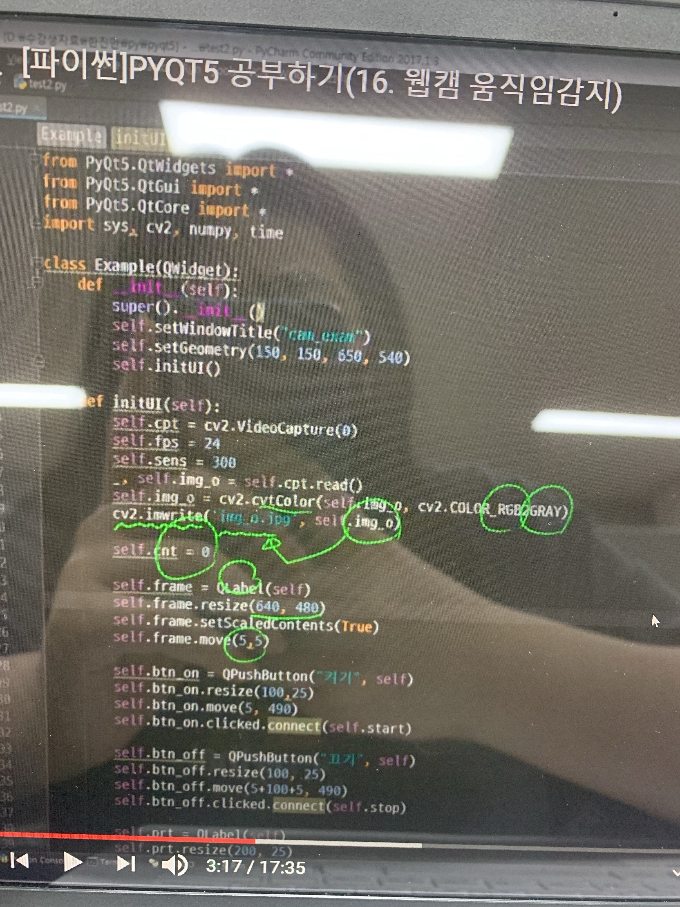

머신러닝
이번 머신러닝 수업에서는 캡스톤을 진행했다.
원래 캡스톤을 하던 수업이 아니라서 당황했다.
솔직히 나는 코딩을 응용하는 방법을 몰랐다.
그래서 조원들에게 피해가 갈까 두려웠다.
그래도 도움이 되야겠다는 마음으로
머신러닝에 대해서도 열심히 공부했다.
우리 조는 요즘 코로나가 심각해져서
마스크 쓰는게 중요하기 때문에
카페나 음식점 키오스크에서
결제를 할 떄 마스크인식이 된
사람만 결제가 가능하게 하는
머신러닝을 만들었다.
교수님이 우리가 아직 3학년이라서
새로운걸 만들지 않아도 된다고 하셔서
그나마 다행이었다.

조장이 마스크인식하는 머신러닝을
만들어오라 했지만 나는 아직
파이썬이라는 언어를 몰랐기 때문에
기간내에 만들지 못했다.
시간을 조금 더 달라고 부탁해서
열심히 해보았지만 실패했다.
그래도 조장이 시간을 더 줘서
조원 언니랑 같이 찾아봤는데
인터넷에 설명된대로 따라하니까
마스크인식하는게 만들어져서 신기했다.